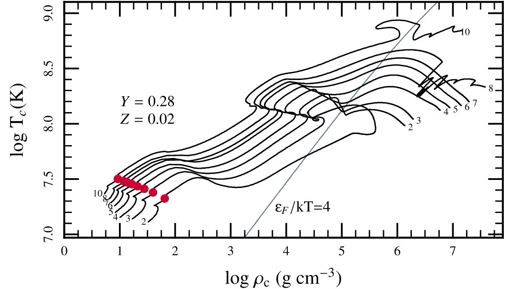
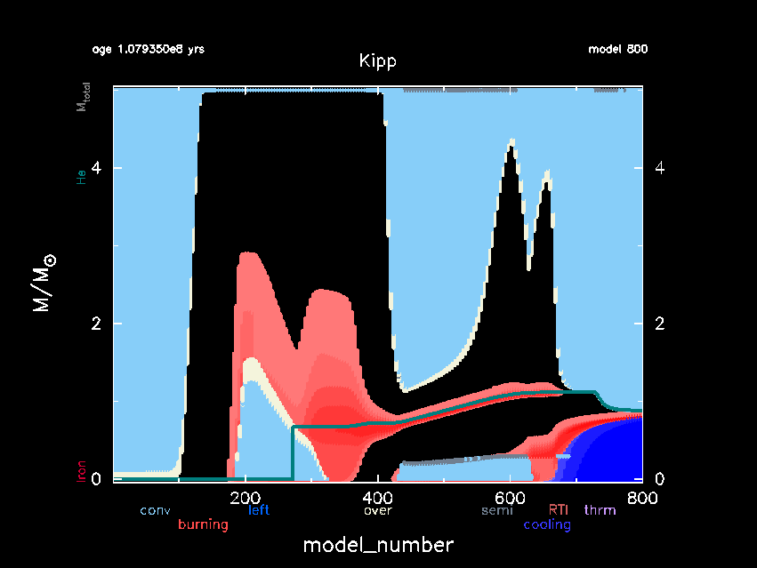

Mid-term exam
This mid-term is a take-home exam due on . All
assignments can be completed using data generated with MESA-web
(calculation submission page) or with your own installation MESA (see
here for input files working with the two most recent versions of the
code adapted from the MESA-web inputs).
Instructions are provided assuming the use of the former, and the latter does not guarantees any bonus, but may afford more flexibility in performing numerical experiments to answer the questions.
What physics drives the evolution of the stellar radius?
A simple model of the Sun
Run a model of a \(1M_{☉}\) star until 14Gyr.
Plot as a function of a variable increasing monotonically in time the evolution of the radius of the Sun.
- What is the present-day value (assume \(t_{☉}=4.5\) Gyr)?
- At what \(t\) does the radius equal 1\(R_{☉}\)?
- Hypothesize which physical ingredients may cause possible mis-matches
- If there were planets orbiting this star at separations \(a=1\) au, when would the star engulf them (and at which evolutionary stage in terms of nuclear fuel)?
- Bonus: show with varying model parameters an improved agreement with the Sun today.
Stellar evolution
The evolution of a star is mostly driven by the thermonuclear conversion of fuel in the core, which changes (on a nuclear timescale) the composition.
- Identify in the stellar structure equations all the quantities explicitly dependent on the chemical composition and briefly describe the physics of this dependence.
Let's use numerical models to change some physical ingredients and see
what would happen to a star. Re-run the previous model, but now three
times using the Burning modifiers option under Nuclear reactions.
These will respectively:
- ignore the changes in chemical composition due to nuclear burning
- ignore the energy release due to nuclear burning
- ignore both of the above.
Compare the radial evolution of the four (or five) models at end.
- Which physical effect drives the evolution of the radius?
- What is the lifetime of the model that has no energy release?
Metallicity variations
Now run models of a 1M☉ star with normal physics assumptions (not neglecting chemical evolution and/or energy release) varying the initial metallicity Z=0.03, (0.02, you have already), 0.01, 0.004, 0.0001.
Once again, compare the radial evolution and the HR diagram of these models.
- How is the R(Z) trend at a given evolutionary phase?
- Explain the physics of the trend, with a theoretically-motivated analytic estimate and confront it quantitatively with your models
Core evolution: \(T(\rho)\) diagrams
We have discussed extensively Hertzsprung-Russel diagrams, which give information on the surface properties of a star (\(L\), \(T_\mathrm{eff}\)). Another key diagram used in (computational) stellar evolution is the \(T_{c}(\rho_{c})\) diagram, which shows the evolution of the central temperature vs. central density of a star, allowing one to visualize the evolution of the innermost center of the star.
N.B.: Do not confuse a \(T_{c}(\rho_{c})\) evolutionary diagram (showing the
temporal evolution of the center of the star, fixed position in the
star varying time), with a \(T(\rho)\) profile (e.g., the ones in the
MESA-web movies which show at fixed time the entire spatial dependence
of the temperature profile using the density as independent
coordinate)!
The figure below shows an example of \(T_{c}(\rho_{c})\) diagram for a set of
MESA models of stars between 2 and 10 \(M_{☉}\) (see number annotation at
the extremes of the curves). The assumed \(\sim\) solar composition is
annotated too.
Describe the physical causes of the various features in this figure, specifically:
- What do the red dots mark?
- In which direction does the evolution proceed?
- What causes deviations from linear behavior on this plot? What physical moment in the evolution of the star do these occur?
- What are the "final" fate of stars with initial mass \(\le8M_{☉}\) based on these calculations?
- Bonus: What is happening for the 8 and 10 \(M_{☉}\) models at the end?
- What is the "final" fate of those two models?

MESA models.Kippenhahn diagram
Another important way to visualize the internal evolution of a star are Kippenhahn diagrams. Consider the following:

MESA (see setup for MESA r24.08.1). Labels in between the x axis and its label indicate the meaning of the colors: light blue indicates convection, white is for overshooting, dark blue indicates energy losses by cooling \(\varepsilon<0\), red indicates energy generation \(\varepsilon>0\) on a logarithmic scale. The thick green line marks the He core mass. The x-axis is in model_number, not a physical quantity.- What is the initial mass of the star?
- Describe qualitatively the evolution shown in the diagram, clearly indicating separate phases.
- For each burning region, identify the fuel.
- What type of star is this model at timestep \(\sim 500\)?
- What type of star is it at model \(\sim 600\)?
Describe qualitatively what happens at timestep \(\sim 600\). Specifically, how do you expect the stellar radius to change?
- At what evolutionary stage is the model terminated at timestep 800?
- What is the final composition of the core?
Mass loss exercise
Throughout their evolution, stars can lose a significant amount of mass. Mass loss channels include:
- pressure- or radiation-driven stellar winds (\(-14\le\log_{10}(-\dot{M}/[M_{☉}\ \mathrm{yr}^{-1}])\le-5\))
- some binary interactions (for the donor star)
- eruptive events (e.g., Luminous blue variable eruptions, flares and coronal mass-ejections, etc.)
Let's consider a star of mass \(M\), outermost radius \(R\), luminosity \(L\), and mass-loss rate \(\dot{M}\):
- Define a timescale associated to mass loss using dimensional analysis
Discuss which stars are more likely to lose mass (main sequence vs. evolved star) using physical arguments.
- How high does \(\dot{M}\) need to be to break hydrostatic equilibrium globally (give a lower limit as a function of \(M\) and \(R\))?
How high does it need to be to break thermal equilibrium globally?
- The observed mass loss rate for the Sun is \(\dot{M}_{☉}\simeq10^{-14}\,M_{☉}\ \mathrm{yr^{-1}}\): does this mass loss drive the Sun out of thermal and dynamical equilibrium?
Although typical stellar mass-loss rates are not that high, to obtain mass loss, gas has to be accelerated beyond the escape velocity from the star (which provides a lower limit to the velocity of the outflow): even if global dynamical equilibrium is maintained, the outer-layers have to experience some acceleration!
Let's think about what sources of acceleration can exist:
- \(dP/dr\): if for some reason the gas pressure density can overcome the gravitational force in the outer-layers, we can have a pressure-driven thermal wind. This is the situation of the Sun, where Alfven waves heat the solar corona to very high \(T\gtrsim 10^{6}\) K, and leading to a wind (see classical papers by Parker 1958, Weber & Davis 1964).
- radiation forces on electrons: this gives the so-called "continuum winds" which may be relevant in the most massive and metal-free stars
- radiation forces on spectral lines: we expect this to be dominant if \(L\) is sufficiently high because of the resonant nature of photon-line interactions. Although the resonances imply that the cross-section for the photon-matter interaction is very peaked in photon frequency \(\nu\), the presence of a velocity of the gas (and consequently Doppler shifts) of the lines can spread the effective cross section. This however introduces a dependence on the opacity \(\kappa\equiv\kappa(T,\rho)\) (usually parametrized following Castor,Abbott, Klein 1975), and a dependence of the acceleration on the velocity (through the Doppler shift), making the problem of line-driven acceleration of the stellar wind highly non-linear and hard to solve (see recent reviews by Puls et al. 2008, Smith 2014).
Let's now consider a very massive star experiencing a brief phase of super-Eddington luminosity:
- Using dimensional analysis and basic quantities such as \(M, R, L\), determine maximum mass-loss rate that can be driven by the excess luminosity.
Evaluation rubric
| Exceptional | Very good | Adequate | Poor | |
|
Physical correctness |
Clear and concise correct quantitative explanation (with physical scaling where appropriate) and interpretation |
Quantitative correct explanation with physical interpretation and scaling |
Quantitative explanation are mostly correct, interpretation is provided but could be clearer |
Lack of quantitative or incorrect quantitative explanation and/or scaling, lack of interpretation |
|
Code/Reproducibility |
Code to reproduce calculations and figures is provides, with README. Sources for externally obtained data ae clearly listed and publicly accessible |
Code to reproduce calculations and figures provided but without clear instructions |
Code to reproduce calculations and figures is only partially provided, is incomplete or not working because of minor issues |
No reproducibility package is provided |
|
Graphics |
publication quality plots with informative annotations, layered secondary information that does not get in the way of a quick interpretation and add to the reader's understanding as they stare at the figure longer. |
Plots are readable, but layering of information could be improved |
Plots are readable but only minimal effort in making them as informative as possible was put in |
Plots are unreadable, missing labels and/or legends, the wrong quantities are shown. |